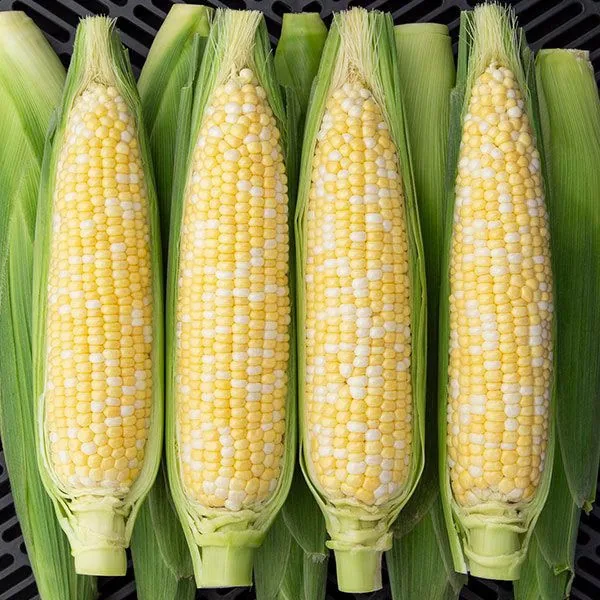
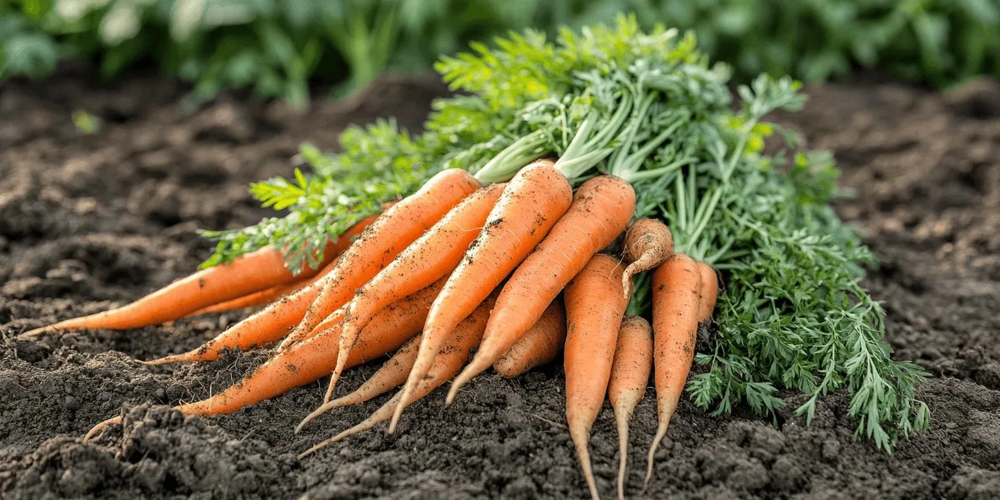
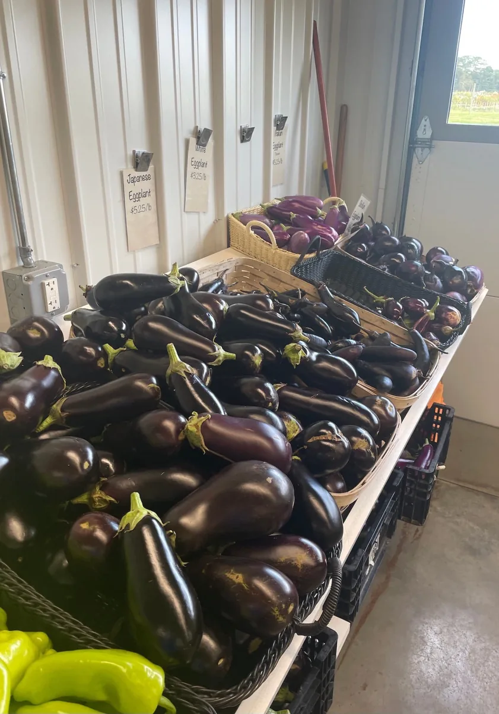
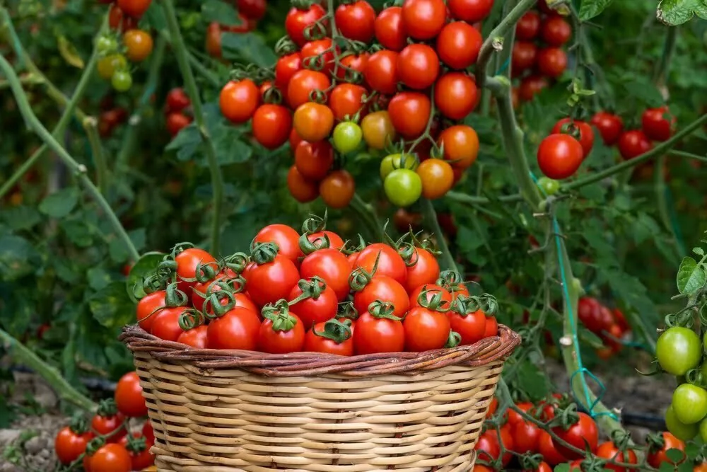
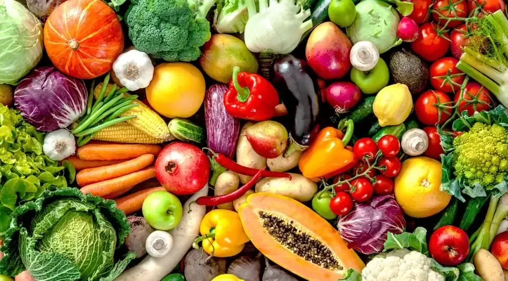
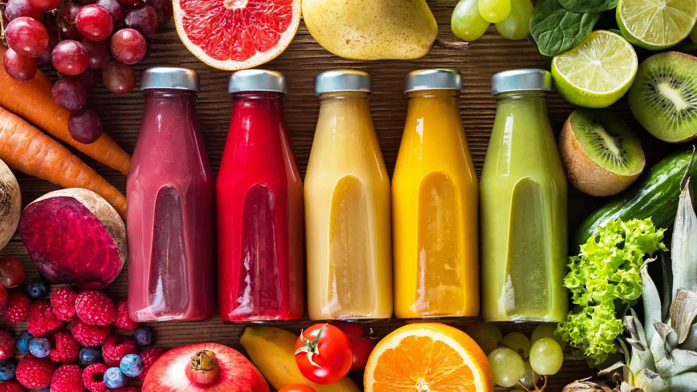
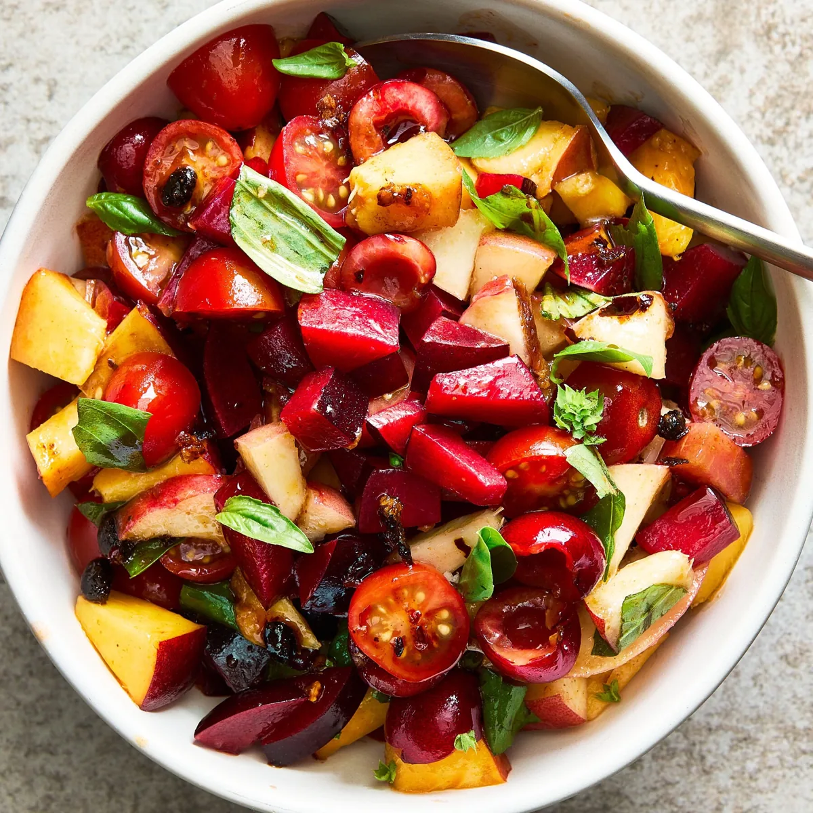
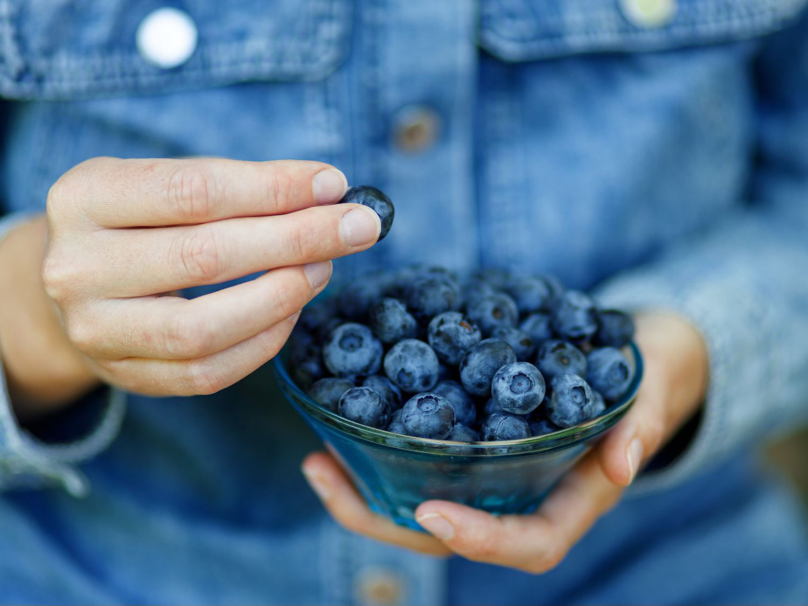
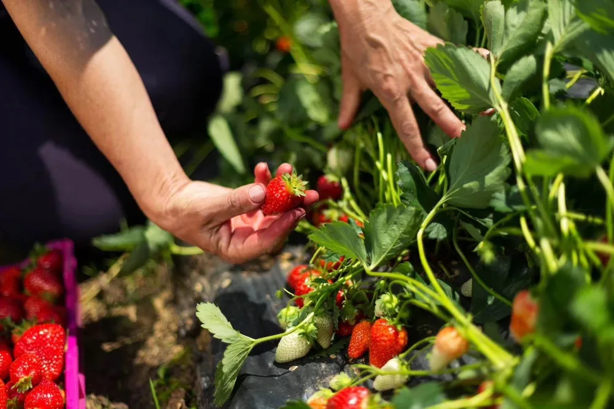

Sweet Corn
Golden, fresh, and ready for inspiration.
Fresh ideas
A visual collection of the produce and farm inspiration from the original design. This is a portfolio showcase; items are not currently for sale.

Golden, fresh, and ready for inspiration.

A crisp staple for any table.

Versatile produce with rich color.

Bright flavor, straight from the garden.

A colorful mix to spark new dishes.

Refreshing flavors inspired by produce.

A bright and simple serving idea.

Small berries with endless possibilities.

A look at the hands behind the ingredients.